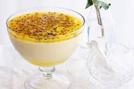

Passion Fruit Cream
Go back

Easy-to-make, fresh and delicious passion fruit cream that nobody can resist
Ingredients
- 250g cream cheese
- 2 cups double cream
- 4 passion fruits
Steps
- Add the pulp of the passion fruits to a pan with a couple of tablespoons of water
- Cook on medium-low heat until the pulp has softened
- Pour the syrup through a strainer and mash with a spoon to separate the seeds from the pulp
- Carefully put the seeds into a small bowl
- In a large bowl, mix the cream cheese, the double cream and the pulp from the passion fruits until smooth
- Pour the mixture through a strainer
- Let rest overnight in the fridge
- Serve in cups, spreading a thin layer of seeds on top of the cream